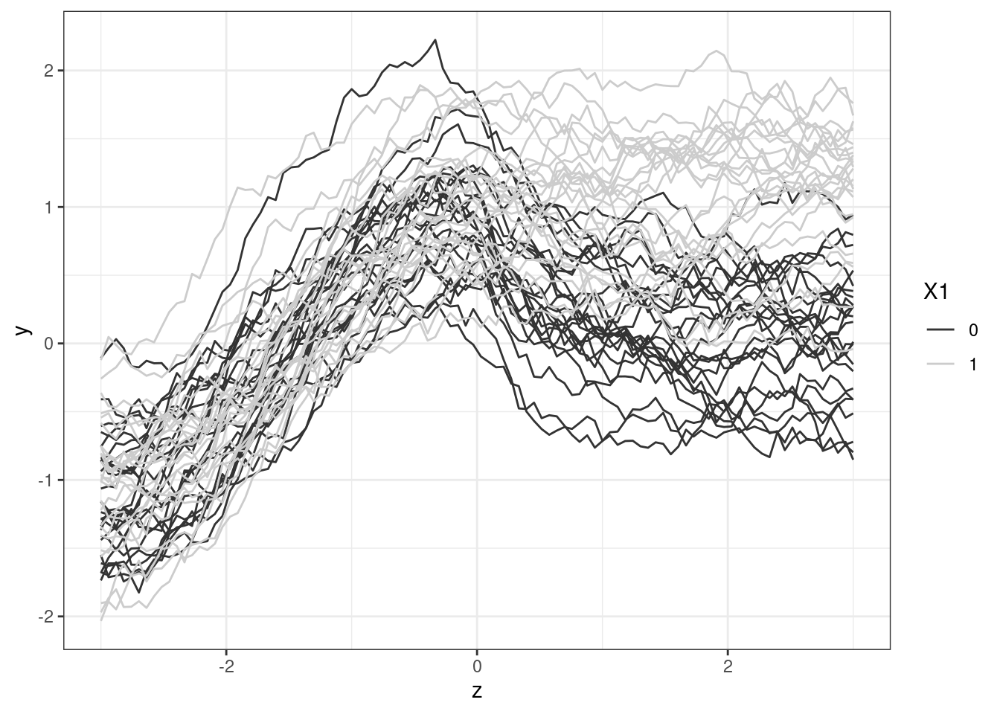
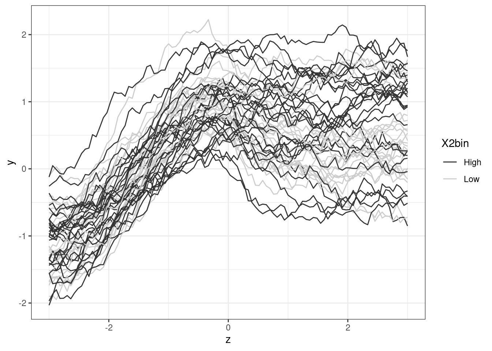
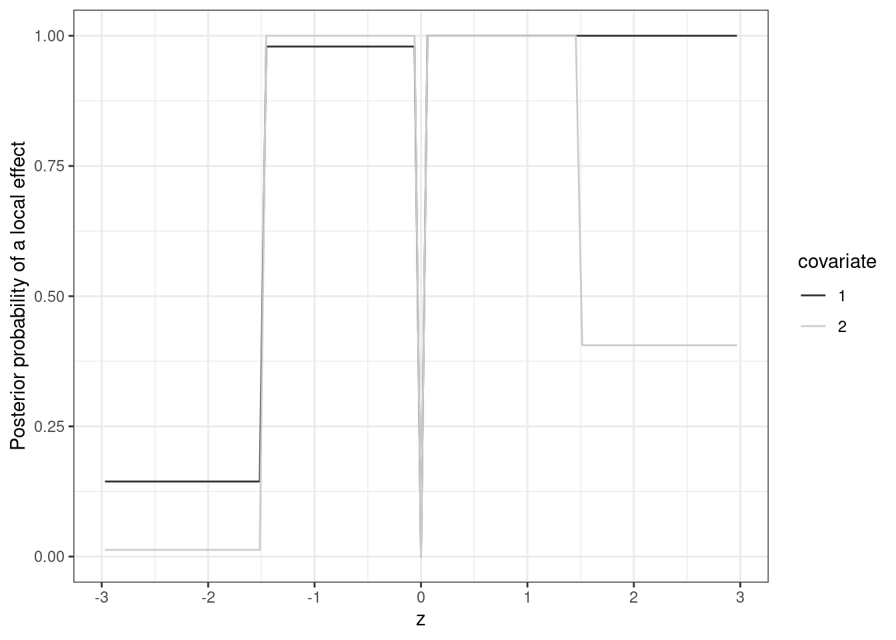
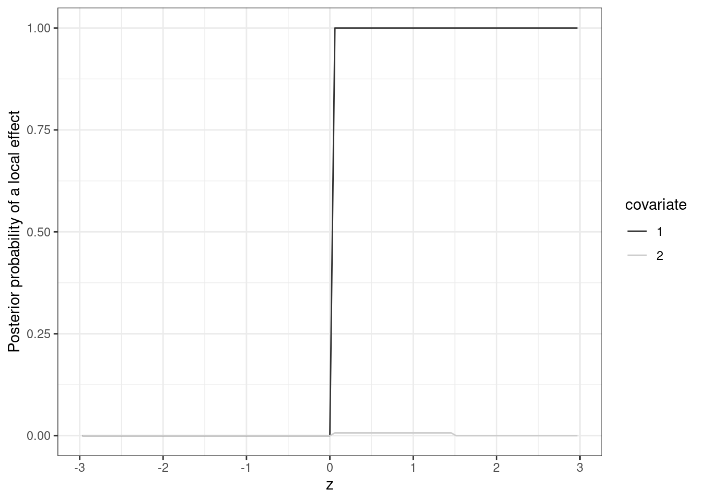

library(mombf)
library(parallel)
library(tidyverse)Local null testing. FDA example
This notebook illustrates how to use localnulltest_fda to perform local tests on functional data analysis. The primary assumption is that we observed several independent trials, and that each trial produced a function (evaluated on a fine grid). We have also observed trial-level covariates, and the goal is to assess whether they affect the mean of the functional data. We load required packages.
Simulate the data
Similarly to the iid errors example, we use a simulation setting where we test for the effect of two covariates at various coordinates \(z \in (-3,3)\). That is we wish to assess the local null hypothesis \[ \beta_j(z) =0 \] for covariates \(j=1,2\). In our example the first covariate is binary, the second covariate is continuous and the correlation between both covariates is roughly 0.43. The simulation truth is set such that the second covariate truly has no effect on the outcome (i.e. \(\beta_2(z)=0\) for all \(z\)) and the first covariate has an effect \(\beta_1(z) > 0\) for \(z>0\) and no effect for \(z \leq 0\).
truemean= function(x,z) {
if (x[1]==1) {
ans= ifelse(z <=0, cos(z), 1)
} else {
ans= ifelse(z<=0, cos(z), 1/(z+1)^2)
}
return(ans)
}We set the simulation parameters. We generate 50 functions (nind below), each consisting of a grid of 100 points (npoints below). We set a strong AR1-type within-trial correlation such that the covariance in the errors after \(l\) lags is \(\rho^l\), where \(\rho=0.99\).
set.seed(1)
nind= 50; npoints= 100; p=2
xind= matrix(NA, nrow=nind, ncol=p)
xind[,1]= rep(0:1,c(nind/2,nind/2))
for (j in 2:p) xind[,j]= xind[,1] + rnorm(nind)
zseq= seq(-3,3,length=npoints)rho= 0.99; Sigma= diag(npoints)
for (i in 1:nrow(Sigma)) for (j in 1:i) Sigma[i,j]= Sigma[j,i]=rho^(i-j)
Sinv= solve(Sigma)Finally, we simulate the data using the specified simulation parameters. Besides the outcome y, covariates x and coordinates z we also store function_id which indicates the function that each observation corresponds to.
y= x= z= vector("list",nind)
for (i in 1:nind) {
m= truemean(xind[i,],zseq)
e= as.vector(rmvnorm(1, sigma=Sigma))
y[[i]]= m + 0.5 * e
x[[i]]= matrix(rep(xind[i,],nrow(Sigma)), ncol=p, byrow=TRUE)
z[[i]]= zseq
}
y= do.call(c,y)
x= do.call(rbind,x)
z= do.call(c,z)
function_id= rep(1:nind, each=npoints)It is illustrative to plot the data. The first plot below shows the generated functions, coloured by the first covariate (which recall truly has a local effect on the function means for \(z>0\)). The second plot shows the same functions, now coloured according to the second covariate. The second covariate does not truly affect the function means but is correlated with the first covariate, hence we observe a marginal association for the second covariate (albeit less marked that for the first covariate).
df= data.frame(function_id, y, x, z)
df$X1= factor(df$X1); df$X2bin= ifelse(df$X2>mean(df$X2),'High','Low')
ggplot(df, aes(z, y)) +
geom_line(aes(group=function_id, color=X1)) +
scale_colour_grey() +
theme_bw()
ggplot(df, aes(z, y)) +
geom_line(aes(group=function_id, color=X2bin)) +
scale_colour_grey() +
theme_bw()
Analysis ignoring within-trial correlation
For illustration we consider first an analysis that ignores the functional nature of the data, i.e. does not account for the within-trial correlation. As we shall see below, this leads to under-estimating uncertainty and hence a false positive inflation. We test for local effects under assumed iid erros with localnulltest, and store the results into a data.frame b0.
fit0=localnulltest(y, x=x, z=z)
b0= coef(fit0) |> mutate(covariate= factor(covariate))The plot below shows the marginal posterior probabilities for the existence of a local effect, \(P(\beta_j(z) \neq 0 \mid y)\), for both covariates \(j=1,2\). Despite the fact that covariate 2 has no effect on the functional means, we obtain high posterior probabilities that such effects exist at several \(z\) coordinates. Also, for covariate 1 we obtain high posterior probabilities for \(z \in (-1.5,0)\), where it truly has no effect.
ggplot(b0, aes(z1, margpp)) +
geom_line(aes(col=covariate)) +
labs(x='z', y='Posterior probability of a local effect') +
scale_colour_grey() +
theme_bw()
Analysis accounting for correlation
We now do a more proper analysis that accounts for within-function dependence. We use function localnulltest_fda, passing as arguments the function identifier and the covariance function defined above.
fit1= localnulltest_fda(y, x=x, z=z, function_id=function_id)
b1= coef(fit1) |> mutate(covariate= factor(covariate))We plot again the marginal posterior probabilities for the existence of a local effect, \(P(\beta_j(z) \neq 0 \mid y)\), for both covariates \(j=1,2\). The inference is fairly accurate, and in particular there is low evidence that covariate 2 has an effect at any \(z\), i.e. there is no longer the false positive inflation observed when (wrongly) assuming iid errors. Although not done here for brevity, one may check that as the number of functions increases both the iid and FDA-based analysis consistently recover the truth, i.e. the false positive inflation for the iid-based approach disappears. To see this, for example you may set nind=200 above to simulate 200 functions.
ggplot(b1, aes(z1, margpp)) +
geom_line(aes(col=covariate)) +
labs(x='z', y='Posterior probability of a local effect') +
scale_colour_grey() +
theme_bw()